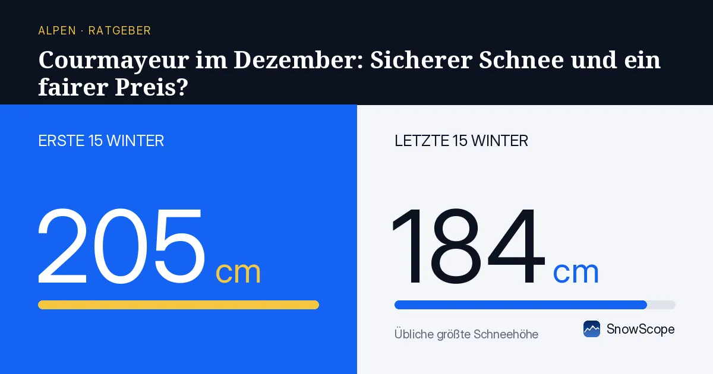

Courmayeur im Dezember: Sicherer Schnee und ein fairer Preis?
Für einen vorsichtigen Anfänger, der einen Skiurlaub im Dezember plant, bietet Courmayeur in Italien ab der Mitte des Berges zuverlässigen Schnee, auch wenn der Skipass nicht billig ist. Ein 6-Tage-Pass für Erwachsene kostet für den Winter 2026-27 auf der offiziellen Website 396,00 EUR, und der Schnee auf 1976 m erreicht in 98 % der vergangenen Winter bis zum 15.-21. Dezember 30 cm oder mehr.
Die Live-Schneeprognose für Courmayeur in der SnowScope-AppSchneehöhen, Pulverschnee-Alarme und 3D-Karte, gratis.
Großer Name, vorsichtiges Budget
Sich für einen ersten Skiurlaub im Dezember eine berühmte Station auszusuchen, fühlt sich mit einem begrenzten Budget riskant an. Niemand möchte viel bezahlen und dann nur wenig Schnee vorfinden, also habe ich Courmayeur mit unserer Schneehistorie aus 46 vergangenen Wintern (1980-81 bis 2025-26) und den offiziellen Passpreisen verglichen.
Das kartierte Skigebiet reicht von 1.204 m bis 2.749 m (1.545 m Höhenunterschied), mit 42 km Pisten und 24 Liften. Dieses kompakte Layout passt gut zu einem vorsichtigen Anfänger.

Schnee-Chancen von der Basis bis zum Gipfel
An der Basis auf 1.204 m beginnt der Dezember dünn. Die übliche Schneehöhe im Dezember beträgt 38 cm, und 38 cm am 15. Dezember (1 dünner Winter von 10 unter 12 cm, 1 tiefer Winter über 84 cm). Vom 1.-7. Dezember erreichen 35 % der vergangenen Winter 30 cm oder mehr und 9 % erreichen 50 cm oder mehr, was auf 57 % und 28 % vom 8.-14. Dezember, 72 % und 50 % vom 15.-21. Dezember und 83 % und 57 % vom 22.-28. Dezember ansteigt.
Auf 1.976 m auf halber Höhe ist die Schneedecke sicherer. Die übliche Schneehöhe im Dezember beträgt 60 cm, und 66 cm am 15. Dezember (1 dünner Winter von 10 unter 28 cm, 1 tiefer Winter über 120 cm). Vom 1.-7. Dezember halten 70 % der vergangenen Winter 30 cm oder mehr und 35 % halten 50 cm oder mehr, ansteigend auf 87 % und 54 % vom 8.-14. Dezember, 98 % und 70 % vom 15.-21. Dezember und 100 % und 80 % vom 22.-28. Dezember.
Auf dem Gipfel auf 2.749 m ist der Schnee den ganzen Monat zuverlässig. Die übliche Schneehöhe im Dezember beträgt 127 cm, und 131 cm am 15. Dezember (1 dünner Winter von 10 unter 60 cm, 1 tiefer Winter über 225 cm). Selbst vom 1.-7. Dezember erreichen 98 % der vergangenen Winter 30 cm oder mehr und 87 % erreichen 50 cm oder mehr, ab dem 8.-14. Dezember bei 100 % für 30 cm und ab dem 15.-21. Dezember bei 100 % für 50 cm.
Offizielle Passpreise für den Winter 2026-27
Auf der offiziellen Website für den Winter 2026-27 kostet ein 1-Tages-Pass für Erwachsene in Courmayeur zum Kassentarif 75,00 EUR. Ein 6-Tage-Pass für Erwachsene in Courmayeur kostet 396,00 EUR, inklusive eines Tages am Skyway Monte Bianco oder in einem anderen Skigebiet im Aostatal. Zu wissen, dass der Pass 396,00 EUR kostet, hilft bei der Budgetplanung, obwohl andere Reisekosten nicht geprüft wurden.
Courmayeur oder La Thuile im Dezember
La Thuile erstreckt sich über Frankreich und Italien mit 79 km Pisten und 17 Liften von 1.468 m bis 2.608 m (1.140 m Höhenunterschied). Auf der offiziellen Website von La Thuile wurde kein Preis geprüft. Die Basis auf 1.468 m hat im Dezember im Schnitt 44 cm und 45 cm am 15. Dezember (1 dünner Winter von 10 unter 17 cm, 1 tiefer Winter über 92 cm) und erreicht 30 cm oder mehr in 48 % der vergangenen Winter vom 1.-7. Dezember und 87 % vom 22.-28. Dezember.
Auf 2.038 m auf halber Höhe hat La Thuile im Schnitt 67 cm im Dezember und 70 cm am 15. Dezember, wobei 50 cm oder mehr von 43 % vom 1.-7. Dezember auf 87 % vom 22.-28. Dezember ansteigen. Der Gipfel auf 2.608 m hat im Schnitt 98 cm im Dezember und 97 cm am 15. Dezember. La Thuile hat mehr Pisten und tieferen Basisschnee, während Courmayeur höher hinaufgeht.
Früher Schnee, aktuelle Winter und November 2026
Anhaltender Schnee beginnt in Courmayeur normalerweise am 27. September am Gipfel, am 8. Oktober auf halber Höhe und am 18. Oktober an der Basis, mit Spitzenwerten von 344 cm, 192 cm und 124 cm. Extreme kommen vor: Die Dezember-Durchschnitte reichten von 7 cm (2014-15) bis 102 cm (1981-82) an der Basis und von 55 cm (2020-21) bis 237 cm (1982-83) am Gipfel.
Von unseren ersten 15 Wintern (1980-81 bis 1994-95) zu unseren letzten 15 (2011-12 bis 2025-26) fielen die Dezember-Durchschnitte von 47 cm auf 42 cm an der Basis, stiegen aber von 63 cm auf 69 cm auf halber Höhe und von 127 cm auf 133 cm am Gipfel. Der letzte Winter (2025-26) hatte im Schnitt 34 cm, 61 cm und 134 cm.
Um zu zeigen, wie diese Saison beginnt: Die heutige Schneeschätzung am 13. November 2026 liegt bei 0 cm an der Basis und auf halber Höhe und 17 cm am Gipfel, mit 8 cm, 68 cm und 109 cm, die in 7 Tagen erwartet werden. Für die mittlere Höhe und darüber gibt der Zwei-Wochen-Ausblick eine Prognose von 84 cm bis 128 cm.
Tipps für Skifahrer
- Ziele auf den 15.-21. Dezember oder den 22.-28. Dezember ab, wenn die mittlere Höhe in 98 % bis 100 % der vergangenen Winter 30 cm oder mehr erreicht.
- Skifahre Anfang Dezember auf 1.976 m bis 2.749 m, da die Basis auf 1.204 m vom 1.-7. Dezember nur in 9 % der vergangenen Winter 50 cm oder mehr erreicht.
- Buche den 6-Tage-Pass für 396,00 EUR auf der offiziellen Website, anstatt wiederholt den 75,00 EUR Tagespreis an der Kasse zu zahlen.
- Prüfe vor jedem Off-Piste-Skifahren den lokalen Lawinenbericht.
Weitere Karten (externe Seiten)
Quellen und Nachweise
- Courmayeur Mont Blanc, official daily ski pass prices 2026-27 www.courmayeur-montblanc.com/skipass-e-tariffe/tariffe-giornaliere/
- SnowScope, December snow at three heights and today's snow map snowscope.app/
Zu diesen Zahlen
Aktueller Schnee und Zwei-Wochen-Ausblick: SnowScope-Prognosen (Ausblick aus ECMWF und GFS, eine Spanne, kein Versprechen). Lifte und Pisten: OpenSkiMap-Kartierung. Preise: die offiziellen Seiten unten, gelesen am 2026-11-13; Preise können sich ändern, vor der Buchung prüfen.
Offizielle Lawinenlageberichte: AINEVA – Associazione Interregionale Neve e Valanghe
Diesen Bericht zitieren
Für Forschung, Lehre oder Presse: Zahlen und Grafiken sind unter CC BY 4.0 mit dieser Quellenangabe frei nutzbar.
SnowScope (2026), Courmayeur im Dezember: Sicherer Schnee und ein fairer Preis?, https://snowscope.app/blog/de/2026/11/courmayeur-december-ski-snow-cost-mont-blanc-2026.html, abgerufen am 2026-11-14
SnowScope (Atlas Labs). (2026, November 14). Courmayeur im Dezember: Sicherer Schnee und ein fairer Preis?. SnowScope snow reports. https://snowscope.app/blog/de/2026/11/courmayeur-december-ski-snow-cost-mont-blanc-2026.html
BibTeX
@misc{snowscope2026courmayeurdecemberskisno,
author = {{SnowScope (Atlas Labs)}},
title = {Courmayeur im Dezember: Sicherer Schnee und ein fairer Preis?},
year = {2026},
month = nov,
howpublished = {\url{https://snowscope.app/blog/de/2026/11/courmayeur-december-ski-snow-cost-mont-blanc-2026.html}},
note = {Published 2026-11-14 13:01 UTC; accessed 2026-11-14}
}· CC BY 4.0 · Methoden, Daten und Werkzeuge →
Courmayeur: Schnee und Temperatur nach Höhe, dieser Winter vs letzter (Werkzeuge) →
Courmayeur folgen
Gratis: eine Nachricht, wenn Neuschnee kommt, und jeden Morgen die Vorhersage.